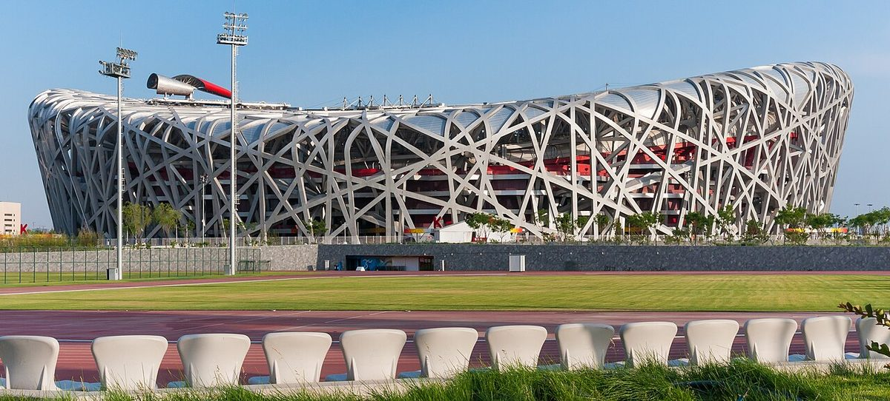

От красных холмов Шервуд-Контента до вершины мировой легкой атлетики: Жизнь Усейна Болта
Прослеживаем путь ямайского спринтера, который переписал представление о человеческой скорости, преодолел ранние проблемы со здоровьем и оставил неизгладимый след в мировом спорте.

Из сельской Ямайки на беговые дорожки Трелони
Задолго до того, как выйти на мировую арену под яркими софитами олимпийских стадионов, Усейн Сент-Лео Болт рос в Шервуд-Контенте [Sherwood Content] — тихом сельском районе в приходе Трелони [Trelawny] на Ямайке. Он родился 21 августа 1986 года в семье владельцев бакалейной лавки Уэллесли и Дженнифер Болт. Его детство под теплым карибским солнцем было наполнено крикетом, футболом и бесконечным движением. Скорость была его естественным спутником, хотя первой настоящей спортивной любовью оставался крикет.
В Мемориальной средней школе Уильяма Нибба [William Knibb Memorial High School] атлетические способности Болта быстро привлекли внимание учителей и тренеров. Однако его природный талант требовал осторожного подхода, особенно когда проявился недуг, который долгие годы определял всю работу с его организмом: тяжелый сколиоз. Искривление позвоночника привело к тому, что его правая нога стала заметно короче левой, что вызывало постоянные проблемы со спиной и задней поверхностью бедра. Это угрожало поставить крест на его карьере еще до того, как она по-настоящему началась.

Поворотный момент легенды
Ключевой момент в ранней карьере Болта наступил под руководством тренера Пабло Макнила [Pablo McNeil], а позже Дуэйна Джаретта [Dwayne Jarrett], которые помогли направить его взрывную энергию в спринт. На чемпионате мира среди юниоров 2002 года в Кингстоне нервничавший 15-летний Болт вышел на старт перед лицом 36 000 зрителей, яростно поддерживавших своих. Ошеломленный давлением, он поначалу надел шиповки не на те ноги, но затем собрался и выиграл финал на дистанции 200 метров за 20,61 секунды. Эта золотая медаль в одночасье превратила его в национального героя и научила справляться с колоссальным грузом ожиданий.
И все же дорога к абсолютном доминированию не была усыпана только розами. Неудачи на Олимпийских играх 2004 года в Афинах, где из-за травмы подколенного сухожилия он выбыл уже в первом раунде на 200 метров, и на чемпионате мира 2005 года в Хельсинки, где он дошёл до финала на 200 метров, но из-за травмы финишировал последним, породили широкие сомнения в его профессионализме и выносливости. Критики задавались вопросом: не слишком ли его долговязое телосложение при росте 196 см (6 футов 5 дюймов) подходит для механики элитного спринта, где традиционно доминировали более низкие атлеты?
Переосмысление пределов человеческих возможностей в Пекине и за его пределами
Поворотный момент в современной легкой атлетике наступил летом 2008 года на Пекинском национальном стадионе. Избавившись от рецидивов травм благодаря курсу интенсивного лечения и изменению тренировочного процесса под руководством тренера Глена Миллса [Glen Mills], Болт поразил мир, выиграв финал на 100 метров с мировым рекордом — 9,69 секунды. При этом он демонстративно сбавил скорость и бил себя в грудь еще до пересечения финишной черты. Спустя несколько дней он побил легендарный рекорд Майкла Джонсона [Michael Johnson] на дистанции 200 метров, показав 19,30 секунды, Он также выиграл в составе сборной Ямайки эстафету 4х100 метров с мировым рекордом, однако в 2017 году это золото было аннулировано после того, как в допинг-пробе его партнёра по команде Несты Картера обнаружили запрещённое вещество.
Болт закрепил за собой статус бессмертной легенды спорта на чемпионате мира по легкой атлетике 2009 года в Берлине, где он показал 9,58 секунды на стометровке и 19,19 секунды на дистанции 200 метров — результаты, которые до сих пор остаются непобитыми. За три последовательные Олимпиады в Пекине, Лондоне и Рио-де-Жанейро он завоевал восемь золотых медалей, воплотив в жизнь философию о том, что невозможное — это всего лишь временный рубеж.
Жизнь после беговой дорожки
После ухода из соревновательного спорта по окончании чемпионата мира 2017 года в Лондоне Болт занялся предпринимательством, благотворительностью и на короткое время осуществил давнюю страсть к профессиональному футболу, тренируясь с клубами в Австралии и Европе. Через свой фонд Usain Bolt Foundation он продолжает создавать возможности для получения образования и приобщения к культуре для детей на Ямайке.
Наследие человека, известного как «Молния» (Lightning Bolt), простирается далеко за пределы медалей и секундомеров. Он доказал, что анатомические особенности вроде сколиоза не предопределяют судьбу, а радость и расслабленность на крупнейших стадионах могут прекрасно уживаться с бескомпромиссным спортивным перфекционизмом. Для поколений атлетов по всему Карибскому бассейну и далеко за его пределами его путь остается непреходящим свидетельством того, что происходит, когда чистый природный дар встречается с непоколебимым упорством.